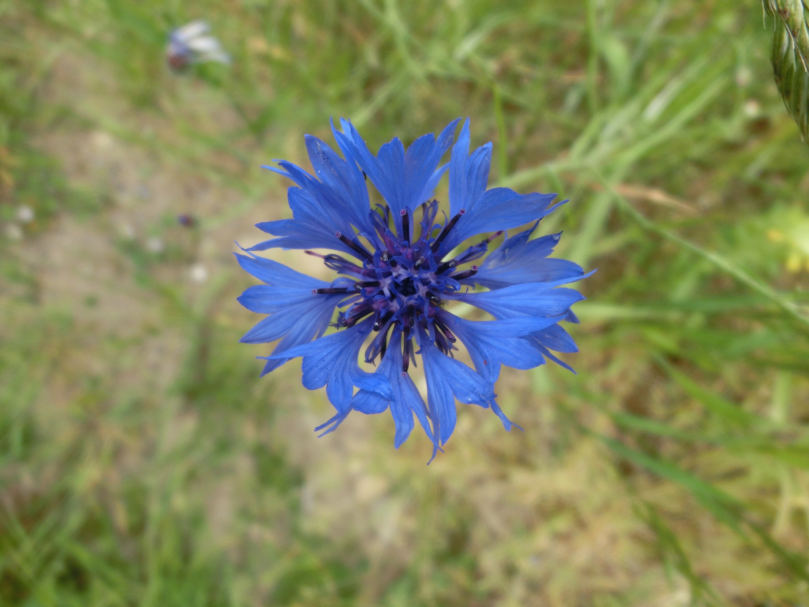
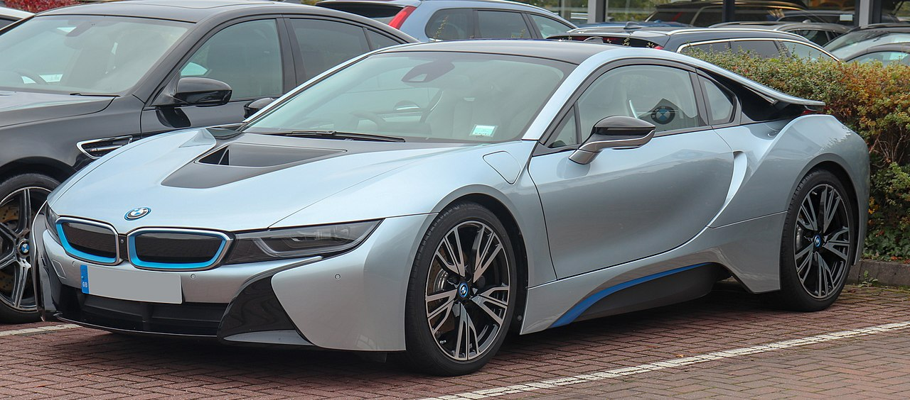
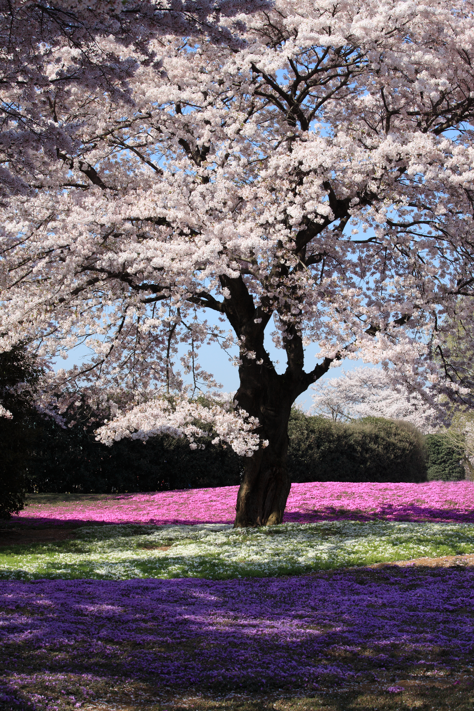
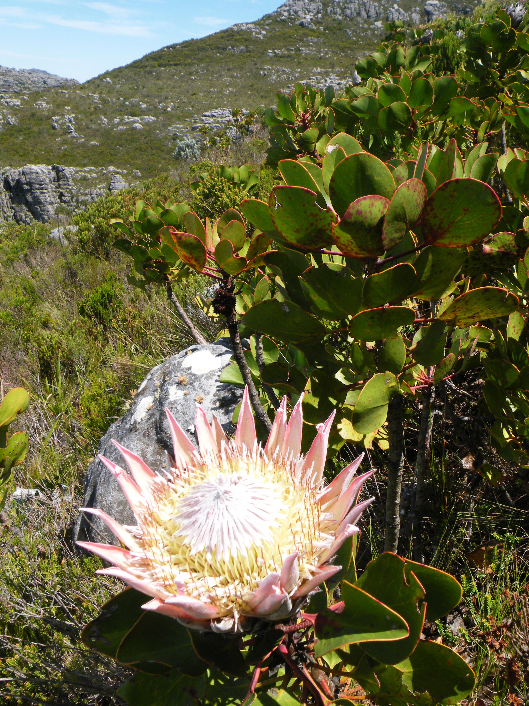
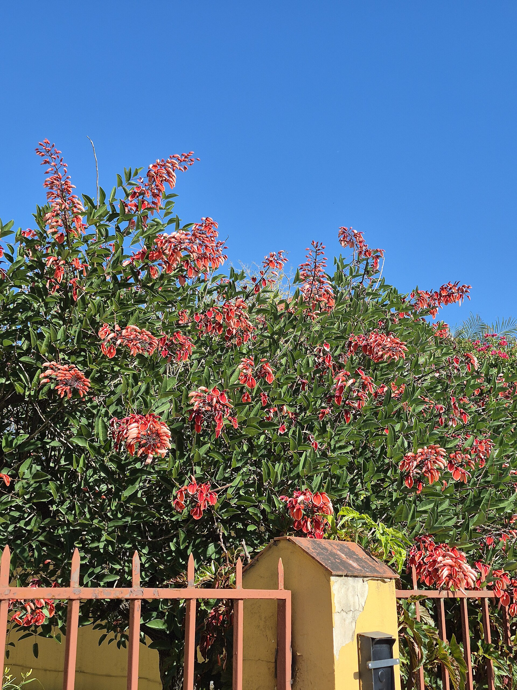

Germany
Berlin
5.9°C — Clear sky
Wind: 2.1 km/h
National flower: Cornflower
Sheer Driving Pleasure — since 1916
Welcome to a celebration of BMW — Bayerische Motoren Werke — one of the world's most iconic automotive brands. Known for their perfect balance of performance, luxury, and engineering precision, BMW cars have captivated drivers for over a century.
欢迎来到宝马（BMW）的品牌庆典。宝马以其卓越的性能、奢华与工程精度的完美平衡著称，百余年来令无数驾驶者为之倾心。
Selamat datang ke perayaan BMW — Bayerische Motoren Werke — salah satu jenama automotif paling ikonik di dunia.
உலகின் மிகவும் புகழ்பெற்ற வாகன பிராண்டுகளில் ஒன்றான BMW கொண்டாட்டத்திற்கு வரவேற்கிறோம்.
BMW was founded in Munich, Germany in 1916. Key model variants include the iconic 3 Series sports sedan, the executive 5 Series, the flagship 7 Series luxury sedan, the X Series SUVs, the high-performance M Series, and the electric i Series.
宝马于1916年在德国慕尼黑创立。主要车型包括：3系运动轿车、5系、7系豪华轿车、X系列SUV、高性能M系列，以及电动i系列。
BMW diasaskan di Munich, Jerman pada tahun 1916. Varian model utama merangkumi sedan sukan 3 Series, 5 Series eksekutif, 7 Series mewah, SUV siri X, siri M berprestasi tinggi, dan siri i elektrik.
BMW 1916 ஆம் ஆண்டு ஜெர்மனியின் மியூனிக்கில் நிறுவப்பட்டது. முக்கிய மாடல் வகைகளில் 3 சீரிஸ், 5 சீரிஸ், 7 சீரிஸ், X சீரிஸ் SUVகள், M சீரிஸ் மற்றும் i சீரிஸ் அடங்கும்.


Berlin
5.9°C — Clear sky
Wind: 2.1 km/h
National flower: Cornflower

Tokyo
14.9°C — Overcast
Wind: 3 km/h
National flower: Cherry blossom

Pretoria
11.6°C — Overcast
Wind: 11.9 km/h
National flower: King Protea
Ottawa
7.6°C — Overcast
Wind: 13.9 km/h
National flower: Trillium

Buenos Aires
14.9°C — Clear sky
Wind: 3 km/h
National flower: Ceibo